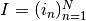
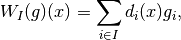
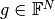
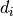

WeightedSumSamplingOperator¶
- class odl.operator.tensor_ops.WeightedSumSamplingOperator(*args, **kwargs)[source]¶
Bases:
OperatorOperator computing the sum of coefficients at sampling locations.
This operator is the adjoint of
SamplingOperator.Notes
The weighted sum sampling operator for a sequence  of indices (possibly with duplicates) is given by

where  is the value vector, and  is either a Dirac delta or a characteristic function of the cell centered around the point indexed by
 .
.- Attributes:
adjointAdjoint of this operator, a
SamplingOperator.domainSet of objects on which this operator can be evaluated.
inverseReturn the operator inverse.
is_functionalTrueif this operator's range is aField.is_linearTrueif this operator is linear.rangeSet in which the result of an evaluation of this operator lies.
sampling_pointsIndices where to sample the function.
variantWeighting scheme for the operator.
Methods
__call__(x[, out])Return
self(x[, out, **kwargs]).derivative(point)Return the operator derivative at
point.norm([estimate])Return the operator norm of this operator.
- __init__(range, sampling_points, variant='char_fun')[source]¶
Initialize a new instance.
- Parameters:
- range
TensorSpace Set of elements into which this operator maps.
- sampling_points1D
array-likeor sequence of 1D array-likes Indices that determine the sampling points. In n dimensions, it should be a sequence of n arrays, where each member array is of equal length N. The indexed positions are
(arr1[i], arr2[i], ..., arrn[i]), in total N points. Ifrangeis one-dimensional, a single array-like can be used. Likewise, a single point can be given as integer in 1D, and as a array-like sequence in nD.- variant{'char_fun', 'dirac'}, optional
This option determines which function to sum over.
- range
Examples
In 1d, a single index (an int) or a sequence of such can be used for indexing.
>>> space = odl.uniform_discr(0, 1, 4) >>> op = odl.WeightedSumSamplingOperator(space, sampling_points=1) >>> op.domain rn(1) >>> x = op.domain.element([1]) >>> # Put value 1 at index 1 >>> op(x) uniform_discr(0.0, 1.0, 4).element([ 0., 1., 0., 0.]) >>> op = odl.WeightedSumSamplingOperator(space, ... sampling_points=[1, 2, 1]) >>> op.domain rn(3) >>> x = op.domain.element([1, 0.5, 0.25]) >>> # Index 1 occurs twice and gets two contributions (1 and 0.25) >>> op(x) uniform_discr(0.0, 1.0, 4).element([ 0. , 1.25, 0.5 , 0. ])
The
'dirac'variant scales the values by the reciprocal cell volume of the operator range:>>> op = odl.WeightedSumSamplingOperator( ... space, sampling_points=[1, 2, 1], variant='dirac') >>> x = op.domain.element([1, 0.5, 0.25]) >>> 1 / op.range.cell_volume # the scaling constant 4.0 >>> op(x) uniform_discr(0.0, 1.0, 4).element([ 0., 5., 2., 0.])
In higher dimensions, a sequence of index array-likes must be given, or a single sequence for a single point:
>>> space = odl.uniform_discr([0, 0], [1, 1], (2, 3)) >>> # Sample at the index (0, 2) >>> op = odl.WeightedSumSamplingOperator(space, ... sampling_points=[0, 2]) >>> x = op.domain.element([1]) >>> # Insert the value 1 at index (0, 2) >>> op(x) uniform_discr([ 0., 0.], [ 1., 1.], (2, 3)).element( [[ 0., 0., 1.], [ 0., 0., 0.]] ) >>> sampling_points = [[0, 1], # indices (0, 2) and (1, 1) ... [2, 1]] >>> op = odl.WeightedSumSamplingOperator(space, sampling_points) >>> x = op.domain.element([1, 2]) >>> op(x) uniform_discr([ 0., 0.], [ 1., 1.], (2, 3)).element( [[ 0., 0., 1.], [ 0., 2., 0.]] )